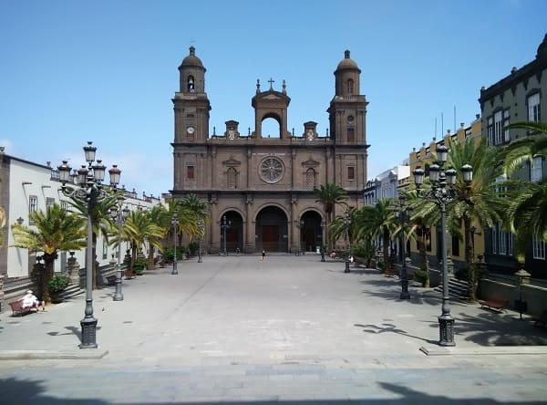

On June 24, 1478 an army commanded by Captain Juan Rejón sent by the Crown of Castile installed a military camp near the mouth of the Guinigualda ravine.
That camp was the origin of what would be the first city founded by the Crown in the Atlantic prior to the colonization of America.
The introduction of sugarcane from America resulted in the Canary Islands being the epicenter of the sugar industry in Europe. This resulted in the camp giving rise to the city of Las Palmas and the start of its great growth.
On June 24, 1478 an army commanded by Captain Juan Rejón sent by the Crown of Castile installed a military camp near the mouth of the Guinigualda ravine.
That camp was the origin of what would be the first city founded by the Crown in the Atlantic prior to the colonization of America.
The introduction of sugarcane from America resulted in the Canary Islands being the epicenter of the sugar industry in Europe. This resulted in the camp giving rise to the city of Las Palmas and the start of its great growth.
The neighborhood of Triana would be its axis and in what today is the San Telmo park would be the port of Las Palmas.
Las Palmas, then, would be limited to the neighborhoods of Vegueta and Triana, which, like almost all coastal Castilian cities, had a special fortification due to the attacks of British pirates.
At the beginning of the 19th century, the Canarian economy maintained, as in the rest of Spain, a major share of the agricultural sector, with the traditional division between the sub-sectors of export agriculture (wines) and that of the polyculture of internal self-consumption; an artisan industry reduced to the minimum expression for the reasons already pointed out in the previous century, and a role of intermediary in the commercial relations with the American colonies.
In the middle of the 19th century, the new port began in its current location and a modernization of the entire city was carried out, which had been stagnant for decades since the decline of the sugar industry.
The introduction of sugarcane from America resulted in the Canary Islands being the epicenter of the sugar industry in Europe. This resulted in the camp giving rise to the city of Las Palmas and the start of its great growth.
At the end of the century the first hotel, the Santa Catalina, is now ignagura, today a 5-star hotel in the center of the city that can be seen in the following image. Little by little, more hotels will be emerging and it is in the middle of the 20th century with the construction of the airport that it stands as one of the most demanded tourist destinations at the national level, starting a hotel career by taking over the best areas of the island.
From the 80s the flowering of the south of Gran Canaria displaces the capital as the first tourist destination, especially at the beach level, however the architectural character of the island and that the population is concentrated in this city does not make you lose population or investments.
The guaguas service is improved and modernized and most of the monuments and streets of the island are restored and armored against the dangers of the passage of time. Many buildings such as the congress palace are built, and the unviversity campus is improved.
In recent years there has been an effort to improve the vision of the capital, integrating the most troubled neighborhoods and providing them with money for buildings and social action as in the neighborhood of La Isleta and Polvorín as well as La Minilla.
In addition, much has been invested in the arrangement of the promenade and the beach of Las Canteras, which next to the historic center are the two touristic engines of the capital.

The city has buildings with different architectures but the most marked is the colonial style that would later be taken to South America.
Simple buildings more based on functionality than aesthetics.
The most important monument is the cathedral of the Canary Islands that is in the neighborhood of Vegueta. Neighborhood near where was the port of that time, which was in what is now the San Telmo park.
Like important churches that are conserved this the church of San Jose and the church of Santo Domingo de Guzman.
Near the cathedral there are some churches that have centuries of antiquity as the cathedral, and the Galdos theater pereque, building of the last century that represents the Canarian culture and where the best works of Spain and international are given appointments.
From the time of the incursions of English pirates and trade with South America are some towers or walls such as the Torreón de San Pedro Mártir, known as Castillo de San Cristóbal whose name gives its name to the neighborhood.
In those times, the island was once conquered by the potter of the Dutch fleet, and there was a general looting of the cathedral of Santa Ana as well as churches and private houses.
When retiring of the islands they caused a great fire in which many cultural goods were lost forever, among them very expensive altarpieces in the churches and great works of art many of them made of gold or silver of the time.
However, despite the strength of the fire, the temple resisted thanks to the materials with which it was built.
That is why it has arrived to our days.
The oldest neighborhoods are Vegueta and Triana, which made up the ancient city of Las Palmas.
Among the monuments besides the religious stand out the house of Columbus and the provincial archaeological museum.
As buildings or palaces preserved the Rodriguez Quegles palace or the house Falcon and Quintana, both of a late eighteenth century or the early nineteenth.


Las Palmas has 5 beaches, the beach of San Cristobal, the Laja, the Confital, the Alcaravaneras and the Canteras. The latter is the most important beach in the city and one of the most visited on the island. It extends throughout the north of the capital taking more than 3 kilometers in length. It is divided into several sections as shown in the image below.


All in all, Las Palmas is a lively and dynamic city in Spain and one with the greatest growth potential. The quality of life is quite high due to competitive prices and high consumption due to the number of tourists who visit it every year. In addition the number of parties, festivals and events is very high, there is always some excuse to go out both at night and during the day.

Usando este sitio web aceptas nuestros Terminos y condiciones. Por favor Aceptar esto antes de usar el sitio web.
© 2016 - All Rights Reserved - Diseñada por Sergio López Martínez
El sitio se mantiene gracias a la publicidad, por favor Desactiva Adblock para seguir navegando
He desactivado Adblock![[Valid RSS]](https://www.feedvalidator.org/images/valid-rss-rogers.png "Validate my RSS feed")